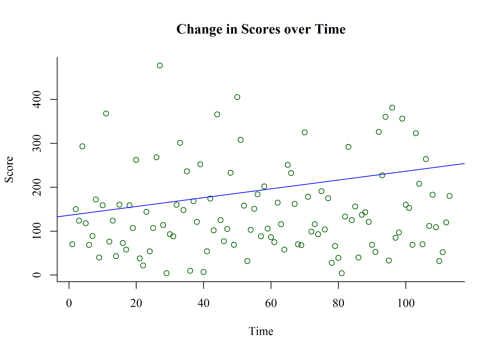

Crossy Road
Erik-Jan van Kesteren
Introduction
Welcome to my blog! I’ve had this post for a while and now I decided to actually put it up. I really enjoyed making it, and I hope you enjoy reading it and learn a bit more about the negative binomial distribution like I did.
Negative Binomial
I played Crossy Road a lot with my girlfriend while on holiday. I wanted to know what kind of distribution our scores follow, so I decided to record our scores for a while. A Negative Binomial distribution fits these scores very well! This also agrees with the interpretation of the negative binomial of the amount of successful trials before a certain amount of failures, which is indeed the process governing the Crossy Road scores: one jump is a successful trial, and you need 2 failures (both players) to end! The fit is from a negative binomial distribution with mean 145 and size 2. In fancy math notation, that would be as follows: \[\frac{\Gamma(x+2)}{\Gamma(2)\cdot x!} \cdot \left( \frac{2}{2+145} \right)^2 \cdot \left( 1-\frac{2}{2+145} \right)^x\]
See below how well it fits.
nb <- fitdist(data = cr$Crossy, distr = "nbinom")
par(family = "serif")
plot(nb)In the right panel displaying the empirical and theoretical cumulative distribution functions you can see that the data fits the distribution extremely well! To show this even better, I’ll plot a raw data histogram with this negative binomial distribution function plotted over the top:
par(family="serif")
curve <- dnbinom(1:(max(cr$Crossy+10)),size = coef(nb)[1], mu = coef(nb)[2])
hist(cr$Crossy, breaks = "FD", xlim = c(0,max(cr$Crossy)+10),
main = "Crossy Road", xlab = "Points on Multiplayer Game", col = "#BAFABA",
border = "#BAFABA")
par(new = T)
plot(curve, xlim = c(0,max(cr$Crossy)+10), type = "l",
bty = "n", xlab = "", ylab = "", xaxt = "n", yaxt = "n", col = "blue",
main = "")
par(new = T)
plot(density(cr$Crossy), xlim = c(0,max(cr$Crossy)+10), main = "",
bty = "n", xlab = "", ylab = "", xaxt = "n", yaxt = "n", col = "red")
legend("topright", legend = c(paste("nbinom(",round(coef(nb)[1]),", ",
round(coef(nb)[2]),")",sep = ""),
"density estimate"), fill = c("blue","red"),
bty = "n", border = "#FFFFFF")
Negative Binomial Regression
We can see if the time variable has an influence on our scores using a negative binomial regression. This type of regression assumes that the errors are distributed according to a negative binomial distribution. In this way, we can test the hypothesis that we get better at the game over time.
par(family="serif")
fit <- glm.nb(Crossy~Time, cr)
summary(fit)##
## Call:
## glm.nb(formula = Crossy ~ Time, data = cr, init.theta = 2.005910907,
## link = log)
##
## Deviance Residuals:
## Min 1Q Median 3Q Max
## -3.1306 -0.8437 -0.2474 0.2859 2.1569
##
## Coefficients:
## Estimate Std. Error z value Pr(>|z|)
## (Intercept) 4.91548 0.13468 36.498 <2e-16 ***
## Time 0.00112 0.00205 0.546 0.585
## ---
## Signif. codes: 0 '***' 0.001 '**' 0.01 '*' 0.05 '.' 0.1 ' ' 1
##
## (Dispersion parameter for Negative Binomial(2.0059) family taken to be 1)
##
## Null deviance: 122.87 on 112 degrees of freedom
## Residual deviance: 122.58 on 111 degrees of freedom
## AIC: 1332.6
##
## Number of Fisher Scoring iterations: 1
##
##
## Theta: 2.006
## Std. Err.: 0.255
##
## 2 x log-likelihood: -1326.642plot(cr$Time, cr$Crossy, col = "dark green", bty = "L", ylab = "Score", xlab= "Time",
main = "Change in Scores over Time")
abline(exp(coef(fit)), col = "blue")
I’ll leave drawing any conclusions up to you :)
Questions that remained for me, maybe you can generate some ideas:
Does the shape parameter change with different amounts of players?
How can we incorporate the dependence between consecutive trials? (NB assumes i.i.d. Bernoulli trials)
In Crossy Road you both have to die within a short distance of each other. Can this modelled?